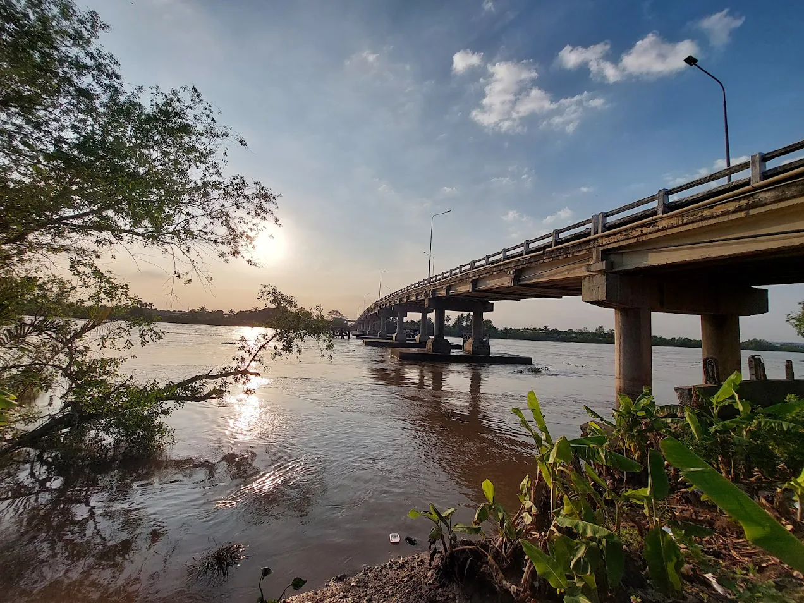

🌙 / ☀️
🎵

- Tên chính thức: Cầu An Hóa
- Tên gọi dân gian: Cầu An Hóa
- Vị trí: nối liền hai huyện Châu Thành và Bình Đại thuộc tỉnh Bến Tre, qua kênh Giao Hòa
- Hoàn thành: 1998
- Chiều dài: 281,4 m
- Chiều rộng: 8 m
- Loại kiến trúc: Cầu dây văng
- Ý nghĩa kinh tế – xã hội: Góp phần phát triển giao thông và kinh tế tỉnh Bến Tre.
- Vai trò: Là tuyến giao thông quan trọng kết nối hai huyện Châu Thành và Bình Đại, tỉnh Bến Tre.